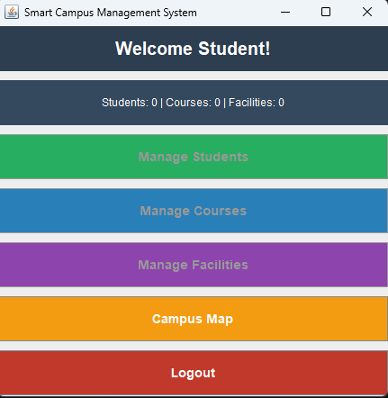

A minimal Express server with two JSON endpoints — my first backend assignment for the FlyRank internship.
A small Express.js server exposing two endpoints: one that returns a hello message, and one that returns server status and the current time. Built to practice basic backend/API fundamentals.

GET / — returns a hello messageGET /status — returns server status and current timenpm install then node server.js, then visit localhost:3000 or localhost:3000/status.